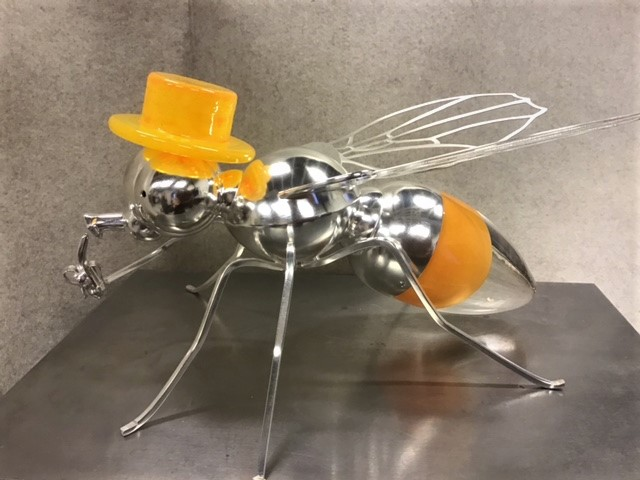

Research highlights and the Cell Fate Lab in the media:
25 November 2021
The Cell Fate Lab will took part in the Receptor Cruise, organized by the Receptor Programme of Biocity Turku. Sami represented the lab with a talk titled "Notch signalling in arterial remodelling".

24 November 2021
We warmly thank Cancer Foundation Finland sr for awarding Cecilia and the Cell Fate Lab funding for the project “Notch counteracts replication stress to prevent cancer cell senescence”.
18-19 November 2021
Cecilia and Kalen represented the Cell Fate Lab and Åbo Akademi University in the Tumor-LN-oC M6 meeting in Athens, Greece. We thank the Zergioti lab, ICCS/NTUA and AMIRES for organizing and hosting and all the other partners for fruitful discussions on the organ-on-chip system to be developed.
3-4 November 2021
Marjaana and Noora represented the Cell Fate Lab in the Joint Nordic Matrix Biology Meeting in Oulu, Finland. Marjaana gave a talk at the event titled “The Notch ligand Jagged1 regulates extracellular matrix production and alignment in breast cancer”.
30 October 2021
Cecilia discussed science and art with science journalist Marcus Rosenlund at Helsinki Book Fair. The event was streamed by Svenska YLE and can be watched here at YLE Arenan: Helsingfors Bokmässa 2021, Kvanthopp.
26 October 2021
Rasmus gave a talk at the ÅAU BioSeminar series on his project “Notch increases the angiogenic output from breast CSCs”.
6 October 2021
Cecilia’s opinion piece in Åbo Underrättelser on this year’s Nobel Prizes in Physiology or Medicine, awarded to David Julius and Ardem Patapoutian for their work on sensing temperature and touch: Nobelpris för människans förmåga att uppleva och tolka den omkringliggande världen.
6 October 2021
Congratulations to Cansu, Tommaso and Cecilia for the publication of the new review Mechano-regulated cell–cell signaling in the context of cardiovascular tissue engineering (Karakaya et al., 2021, Biomech Model Mechanobiol). We thank the Loerakker lab for their collaboration!
2 Oct 2021
Best bits of the Forcing the Impossible event on Researchers’ Night were aired on radio YLE Vega as part of the program Kvanthoppen. The program is available online via YLE Arenan: https:/arenan.yle.fi/audio/1-50924874.
Images from the event, courtesy of Solveig Eriksson:
28 September 2021
Valeriy represented the Cell Fate Lab at the ÅAU BioSeminar series with a presentation on “Notch signaling in endocrine tumors of the pancreas”.
25 September 2021
Svenska YLE attended the Forcing the Impossible event on Researches’ Night! Here’s their report on the discussion by Cecilia and project collaborators on the importance of science communication: "Det har aldrig funnits en tid med större behov av att få världen förklarad, samtidigt som vi lever i en tid då allt färre lyssnar" – Forskarnatten i Åbo fyllde viktig uppgift
24 September 2021
Two artists’ interpretation of Cecilia and professor Ronald Österbacka’s cardiovascular research was presented at the Turku Cathedral. The event included a showing of the animated film “Notch up a Broken Heart” by Antonia Ringbom, display of silver and glass works by Ru Runeberg, a conversation between the collaborators moderated by science journalist Markus Rosenlund and a Q&A with the audience. The event was part of the science outreach project Forcing the Impossible, the Year of Research-Based Knowledge 2021 and the European Research’s’ Night. Below you can find the final pieces of the project.
- Notch up a broken heart
- Notch the fruit fly 
- Notch the heart
14 September 2021
William represented the Cell Fate Lab at the ÅAU BioSeminar series with a talk titled “PIM kinases - novel regulators of oestrogen receptor signalling”.
7 September 2021
Cecilia presented our cancer research at the Turku Cancer Research Society & FICAN West seminar with a talk titled "Tuning Notch for unexpected functions in breast cancer progression".
2 September 2021
Website for the Tumor and Lymph Node on Chip (Tumor-LN-oC) H2020 project is now live! To find out more about the project and partners please visit https://tumor-ln-oc.eu

25 August 2021
Congratulations to Valeriy on defending his thesis!
- Thesis available via UTUPub: Targeting Somatostatin Receptors with Peptide-functionalized Silica Nanoparticles
19 August 2021
Cecilia and animation artist Antonia Ringbom spoke of their collaboration at ABOAGORA, a symposium bringing together academia, the arts, and society. Antonia’s animated film “To Notch up a broken heart”, her artistic interpretation of the quest to utilize Notch in heart regeneration, was also premiered at the event. The collaboration is part of Forcing the Impossible, an interdisciplinary project combining science and art
- “To Notch up a broken heart” trailer
- ABOAGORA symposium programme, including a description of Cecilia and Antonia’s collaboration
- Artist presentation: Antonia Ringbom (Forcing the Impossible)
- Researcher presentation: Cecilia Sahlgren (Forcing the Impossible)
16 August 2021
Welcome Elena Martinez-Klimova to the ÅAU Cell Fate Lab! Elena will work as a postdoctoral researcher within the BACE project in both our group and professor Ronald Österbacka’s group at ÅAU physics.

9 July 2021
Congratulations to Nicole on the day of her PhD thesis defence!

1 July 2021
Welcome Diosángeles Soto Véliz to the ÅAU Cell Fate Lab! Diosa is a research assistant and soon-to-be project researcher finishing up her Doctor of Science thesis from the Martti Toivakka Lab at ÅAU. She will be working within the InFLAMES Flagship and studying mechanobiology and inflammatory signaling of the vascular endothelium.

21 June 2021
Welcome to Alexandra Manea who is starting as new research technician in the ÅAU Cell Fate lab and within the Tumor and Lymph Node on Chip project!
1 June 2021
Welcome to Emma Suhonen and Sara Koivuluoma who are starting as new research assistants and soon-to-be PhD students at the ÅAU Cell Fate lab!

28 May 2021
Cecilia gave an invited speaker presentation on “Forces and signals in cardiovascular tissues” at the NWO Life2021 congress, organized online.
27 May 2021
Sami represented the lab in the Nordic Organ-on-Chip pitching event. To find out more about the Nordic Organ-on-Chip Network, please visit the homepage at: https://nordic-organ-on-a-chip.eu/.
24 May 2021
Check out the trailer for the animated film “Notch up a broken heart” starring Cecilia and her cardiovascular research. The animation is by Antonia Ringbom and the film is produced as part of the science outreach project Forcing the Impossible.
9 May 2021
Cecilia’s interview by the national broadcasting company YLE and Daniel Olin: Cellbiologen Cecilia Sahlgren: Framtidens hjärta läker sig självt (YLE Arenan, 2021). A longer audio version of the interview is available via Audio Arenan and a summary article via Svenska YLE online news: Toppforskaren Cecilia Sahlgren ryter till om de planerade nedskärningarna: "Om det inte satsas på grundforskning avstannar utvecklingen i Finland".
7 May 2021
The Tumor and Lymph Node for cancer studies project has now been officially kicked-off with a meeting between the 11 participating organizations! The project is funded by the European Union’s Horizon 2020 research and innovation programme (grant # 953234) and aims to create a platform to study the interaction of primary tumours and lymph nodes as well as the process of lymph node metastasis. This highly interdisciplinary project will bring together experts in microfluidics, physics, cell and cancer biology, computer programming and software development. Find out more at:
23 April 2021
Cecilia’s interview in the Forskaren podcast on the significance of cell communication in controlling the structure of cardiovascular tissues and as a mediator of therapeutic approaches: Podcasten Forskaren - Cecilia Sahlgren: Cellernas kommunikation (ÅAU). You can also read part of the interview here: Cellernas kommunikation (ÅAU news).
22 April 2021
Our new PIM/Notch3 paper has been highlighted with press releases from both Åbo Akademi University and the University of Turku. Find out more on the project in your language of choice:
- Nya forskningsrön om regleringen av hormonell bröstcancer (ÅAU press release)
- New Research Data on the Regulation of Hormone-dependent Breast Cancer (UTU press release)
- Uutta tutkimustietoa hormoniriippuvaisen rintasyövän säätelystä (UTU press release)
26 March 2021
Congratulations to Sebastian, William, Valeriy and Cecilia for the publication: PIM-induced phosphorylation of Notch3 promotes breast cancer tumorigenicity in a CSL-independent fashion (Landor & Santio et al., 2021, J Biol Chem). A warm thank you to all the collaborators!
13 February 2021
Cecilia’s interview by Svenska YLE, on xenobots: De levande robotarna är på frammarsch: Xenobotar, hot eller möjlighet?
4 February 2021
Cecilia’s interview by Åbo Underrättelser, on the importance of basic research: Från virus till vaccin på 80-dagar – den långsiktiga forskningens undergång?
6 January 2021
Congratulations to Tommaso, Marika and Cecilia for publication of their review: Ex vivo models to decipher the molecular mechanisms of genetic Notch cardiovascular disorders (Ristori et al., 2021, Tissue Engieering: Part C).
4 January 2021
Congratulations to Oscar, Tommaso and Cecilia for publication of their review article: Notch in Mechanotransduction, from Molecular Mechanosensitivity to Tissue Mechanostasis (Stassen et al., 2020, J Cell Sci).